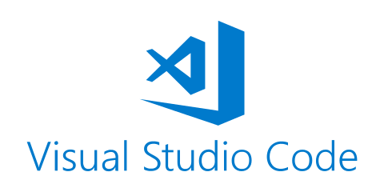
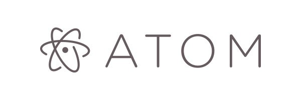
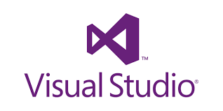

절차지향 언어로써, 주로 시스템 프로그래밍에 사용되는 프로그래밍 언어
각 분야에 사용되는 다른 언어들 바로가기
| Web Programming | App Programming | Game Programming | System Programming | |||
| JavaScript | JAVA | Kotlin | Swift | C++ | Python | C |
|
|
|
|
|
|
|
|  | |
|
 |  | ||
C의 정신은 C99 Rationale에서 다음과 같이 묘사하고 있다.
프로그래머를 믿어라. (Trust the programmer)
프로그래머가 작업을 못하게 방해하지 마라. (Don't prevent the programmer from doing what needs to be done)
언어를 작고 간단하게 유지하라. (Keep the language small and simple)
명령을 실행하는 방법을 하나만 제공하라. (Provide only one way to do an operation)
호환성은 장담할 수 없더라도 빨리 작동하게 만들어라. (Make it fast, even if it is not guaranteed to be portable)
첫 줄의 '프로그래머를 믿어라' 부분이 오늘날 다른 언어들과 가장 큰 차이를 불러오는 것이다. 오늘날 다른 고생산성 언어들이 프로그래머를 못 믿고 퍼포먼스 희생을 감수하고서라도 문제가 생길만한 부분들을 컴파일러 또는 가상머신에서 자동으로 처리해주거나 프로그래머가 이상한 코드를 짜지 못하도록 엄격하게 컴파일해준다면, C는 "믿을 테니까 알아서 해라." 한마디로 끝낸다.
C로 짜여진 코드는 속도가 빠르고 바이너리 크기도 작아 속도가 다른 무엇보다 (심지어는 생산성보다도) 중요한 임베디드 혹은 모바일 계열, 또는 시스템 프로그래밍 등에서 주로 쓰인다. 프로그램의 규모가 커질 경우 C언어로 작성해서 얻을 수 있는 파일의 규모는 Python보다 훨씬 작다. 과거에는 메모리 가격이 비쌌던 만큼 메모리를 적게 잡아먹는 프로그래밍 기법을 선호했으며, 화성 탐사선도 이러한 점을 반영하여 C언어로 만든 프로그램을 사용했다. 현시점에서 C의 가장 큰 의의는 사실상 모든 아키텍처와 운영체제에서 지원하는 언어라는 것이다. C++는 지원하지 않더라도 C는 지원하는 것이 보통이다. 워낙 널리 쓰이다보니 CPU 디자이너들이 가장 먼저 하는 일은 C언어를 instruction set으로 포팅하는 것일 정도다.
성능이라는 대명제에 충실해서 작게는 변수 초기화, 배열 범위 점검, 널 포인터 문제에서부터 크게는 쓰레기 수집(Garbage Collection; GC), 예외처리 같은 것까지 조금이라도 하드웨어에 오버헤드가 걸릴 것 같은 기능은 다 무시한(그래서 프로그래머가 그런 거까지 다 신경 써야 되는), 주니어 프로그래머에게는 힘든 언어다.
느슨한 타입 검사. 초창기의 K&R C와 비교하면 ANSI C부터 타입검사가 비교적 양호해졌지만, 아직도 서로 다른 종류의 포인터끼리의 대입조차 가능하다. 사실 느슨한 타입 검사 자체가 나쁜 건 아니고 최신 언어들은 느슨한 타입 검사를 채용하는 언어가 많은데, 문제는 느슨한 타입 검사를 통과한 타입 미스매치가 실행 시에 치명적인 문제를 일으킬 수 있다.
{ ... }을 이용한 블럭 (ALGOL/PASCAL 스타일의 begin ... end 보다 간결하다.) '대입'을 뜻하는 연산자를 '='로, '동일함'을 뜻하는 연산기호를 '=='로 사용한다. 농담 좀 섞어서, 초심자의 C언어 컴파일 오류의 90%는 여기서 나온다. 다르다를 뜻하는 연산기호를 !=로 사용한다. 또는과 그리고를 ||와 &&로 사용한다. +=, -=, *=, /=등의 직관적인 복합연산자를 지원한다. ++ 와 -- 라는 단항연산자를 사용한다. **와 //는 없다. **은 이중 포인터이고, //은 주석이다. 어차피 수에 1을 곱하거나 나누어도 변함은 없다. 그 외에 if, for, while 등 많은 예약어의 사용 방식. 어떤 의미에서는 프로그래밍 언어의 라틴어/한자라고 할 수도 있을지도 모른다. 현재 많은 주요 언어에서 { }를 이용한 블럭 표기나 C에서 쓰이는 표현식(==, ||, &&), 예약어(if, while) 등을 채택해서 사용하고 있다. 따라서 다른 언어를 배울 때 C언어를 먼저 배웠다면 친숙하게 느껴질 것이다.